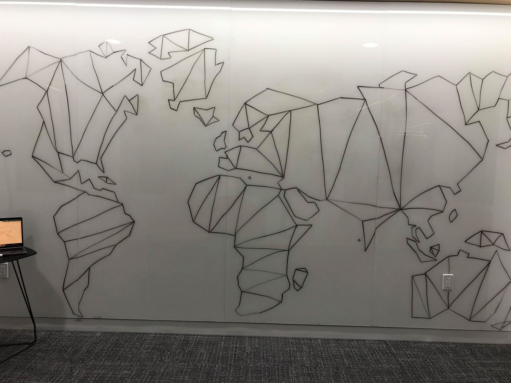

Last week, I drew a map at work.

The design process for this wasn't nearly as thought out as other maps, but I think it's just as important to capture here. I don't enjoy drawing that much, but I enjoy being able to move at the speed of thought.
Ideation. I wanted to draw a map. But drawing maps can be very frusterating depending on how detail oritented you want it to be. I didn't want to draw something too detailed or too simple. I wanted something minimal.
Intention. The theme is here is minimalism. How few strokes can be made until the world no longer looks recognisable. Very purposely, this hones in on the idea of simplification and the maximum threashold for tolerance.
Creation. I started by drawing a bunch of dots; I let the rays fawn out. But that got really old, really fast for me. I minimised my effort and just kinda "winged it". This probably isn't great advice, but this is exactly how it felt to make this map. By creatig too many choices, I had the problem of thinking how that single line played in the whole schema instead of focusing on what was right in front of me. Of course each single line does matter in the grander picture, but if you have a set theme and the appropiate context, then I think it's more critical to focus on honing pieces to create the whole.